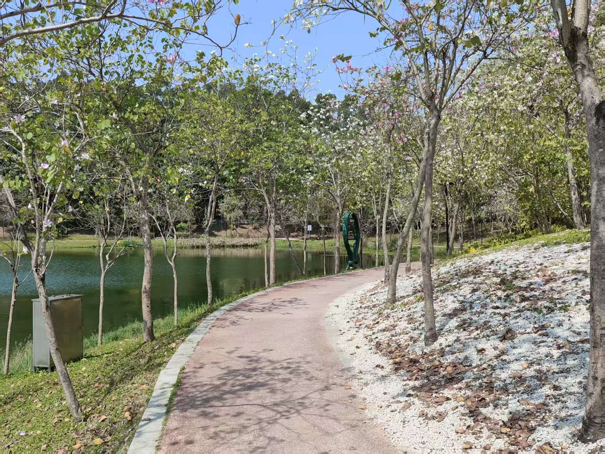
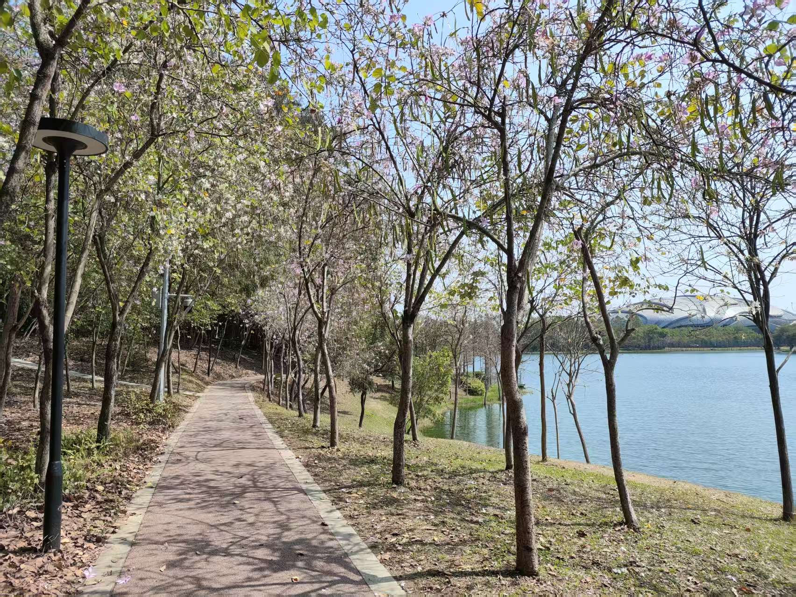
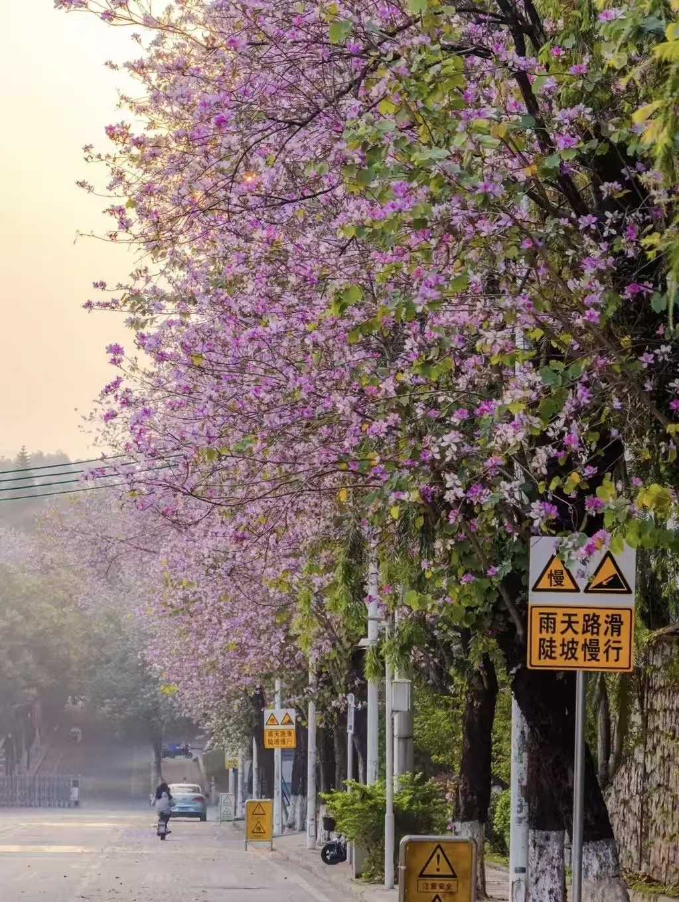

大学城中心湖 · 华南农业大学
中心湖畔紫荆环绕，春日花瓣飘落湖面，适合骑行野餐。


这是广州大学城中央的中心湖公园，环湖的是宫粉紫荆花，落英缤纷，是一个散步的好地方，这也是离暨南大学最近的公园。
华农校内紫荆花海闻名羊城，行政楼、紫荆桥均为热门打卡点。

华农是广州春天里最值得去的高校，去年春天我和强就去华农让丁和甲鱼带我们赏花~同时华农内部还有特别多好玩的地方比如博物馆，大草坪等等！